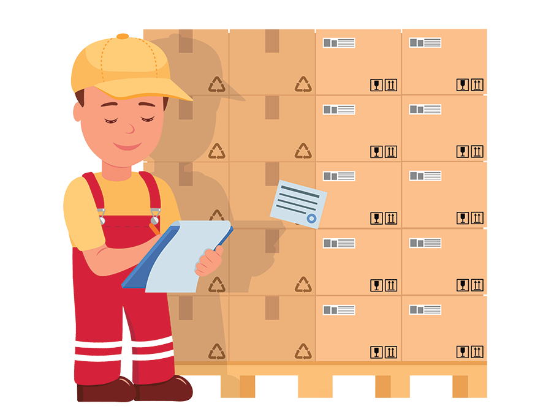

Sistema Actual
Bienvenido a la descripción del sistema actual de G2 Accesorios. En esta página, exploraremos los aspectos clave de cómo operan y gestionan sus actividades comerciales en la actualidad.
Funciones Principales
Ventas
Este módulo se encarga de llevar a cabo las ventas de los distintos productos que ofrece el negocio.
Compras
El módulo de compras permite gestionar y realizar pedidos a los proveedores.

Existencias
Este módulo proporciona información actualizada sobre el nivel de existencias de los productos.
Informe de ventas
El sistema crea informes de ventas para ofrecer una visión resumida de las transacciones en un periodo específico.